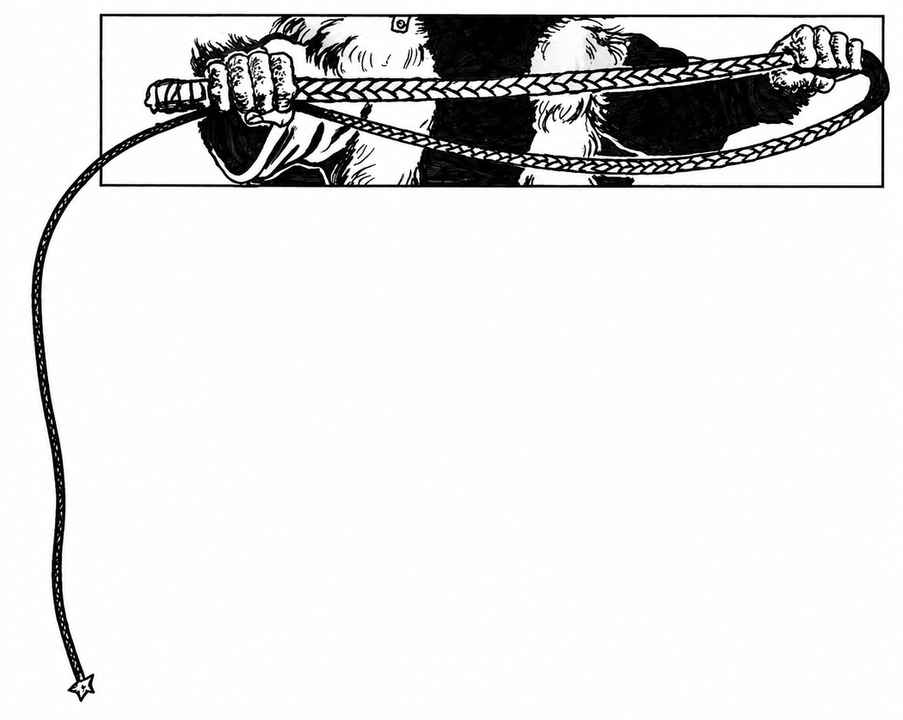

长鞭 · Whip

只有受过高强度训练的使用者才真正危险。要造成伤害，鞭子须碰到裸露或轻微覆盖的皮肉；厚衣、浓密毛发会挡住攻击，直至反复抽打扯去遮蔽。大象、犀牛、河马等厚皮至多微感刺痛而无实际伤害；厚鳞等坚实防护连带配重头的重鞭也几乎感受不到。
鞭子还能缠住肢体或武器。命中后，不熟练者仅有 5%缠绕几率；熟练者可自行选择是否尝试，几率为使用者每等级 5%。若缠上，按下表定部位：
| 缠绕部位 | 几率 | 效果 |
|---|---|---|
| 一肢 | 50% | 10 段内无法有效攻击。 |
| 双肢 | 10% | 同上，且有 25%几率在此期间跪倒或伏倒，之后须重新起身。 |
| 持武器的手臂与武器 | 20% | 10 段内无法有效攻击，且有 10%几率丢失武器；若武器有刃，反有 50%几率割断鞭子。 |
| 头／颈 | 20%；未使用武器的对手为 40% | 10 段内无法有效攻击；若颈部无厚皮、重皮革、盔甲或浓密鬃毛等防护，另受绞索式伤害。 |
熟练使用者可掷 3d6−2，不超过自己的敏捷即可解开鞭子。否则须等鞭子被扯断、割断，使用者自行拉脱，或目标拉脱；目标自行拉脱几率为 5%＋每点力量 1%。